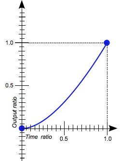
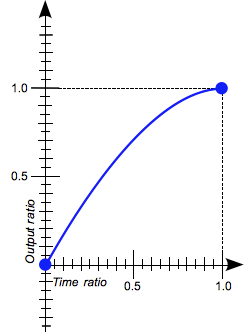
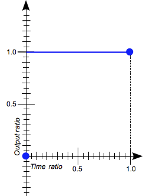
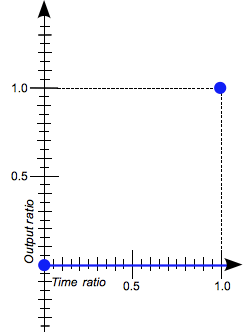

The <easing-function> CSS data type denotes a mathematical function that describes the rate at which a numerical value changes.
This transition between two values may be applied in different situations. It may be used to describe how fast values change during animations. This lets you vary the animation's speed over the course of its duration. It may also be used to interpolate between two colors in a color gradient.
The easing functions in the cubic-bezier subset of easing functions are often called "smooth" easing functions, because they can be used to smooth down the start and end of the interpolation. They correlate an input ratio to an output ratio, both expressed as {{cssxref("<number>")}}s. For these values, 0.0 represents the initial state, and 1.0 represents the final state.
Depending on the specific function used, the calculated output can sometimes grow to be greater than 1.0 or smaller than 0.0 during the course of an animation. This causes the value to go farther than the final state, and then return. In animations, for some properties, such as {{cssxref("left")}} or {{cssxref("right")}}, this creates a kind of "bouncing" effect.

However, certain properties will restrict the output if it goes outside an allowable range. For example, a color component greater than 255 or smaller than 0 will be clipped to the closest allowed value (255 and 0, respectively). Some cubic-bezier() curves exhibit this property.
There are three types of easing function: linear, cubic Bézier curves, and staircase functions. The value of an <easing-function> type describes the easing function using one of those three types.
CSS supports three kinds of easing functions: linear, the subset of the cubic Bézier curves that are functions, and staircase functions. The most useful of these functions are given a keyword that allows them to be easily referenced.
The interpolation is done at a constant rate from beginning to end. This keyword represents the easing function cubic-bezier(0.0, 0.0, 1.0, 1.0).

The cubic-bezier() functional notation defines a cubic Bézier curve. As these curves are continuous, they are often used to smooth down the start and end of the interpolation and are therefore sometimes called easing functions.
A cubic Bézier curve is defined by four points P0, P1, P2, and P3. P0 and P3 are the start and the end of the curve and, in CSS these points are fixed as the coordinates are ratios (the abscissa the ratio of time, the ordinate the ratio of the output range). P0 is (0, 0) and represents the initial time or position and the initial state, P3 is (1, 1) and represents the final time or position and the final state.
Not all cubic Bézier curves are suitable as easing functions as not all are mathematical functions; i.e., curves that for a given abscissa have zero or one value. With P0 and P3 fixed as defined by CSS, a cubic Bézier curve is a function, and is therefore valid, if and only if the abscissas of P1 and P2 are both in the [0, 1] range.
Cubic Bézier curves with the P1 or P2 ordinate outside the [0, 1] range may generate bouncing effects.
When you specify an invalid cubic-bezier curve, CSS ignores the whole property.
cubic-bezier(x1, y1, x2, y2)
where:
The interpolation starts slowly, accelerates sharply, and then slows gradually towards the end. This keyword represents the easing function cubic-bezier(0.25, 0.1, 0.25, 1.0). It is similar to ease-in-out, though it accelerates more sharply at the beginning.

The interpolation starts slowly, and then progressively speeds up until the end, at which point it stops abruptly. This keyword represents the easing function cubic-bezier(0.42, 0.0, 1.0, 1.0).
ease-in-out
The interpolation starts slowly, speeds up, and then slows down towards the end. This keyword represents the easing function cubic-bezier(0.42, 0.0, 0.58, 1.0). At the beginning, it behaves like the ease-in function; at the end, it is like the ease-out function.

The interpolation starts abruptly, and then progressively slows down towards the end. This keyword represents the easing function cubic-bezier(0.0, 0.0, 0.58, 1.0).
The steps() functional notation defines a step function dividing the domain of output values in equidistant steps.This subclass of step functions are sometimes also called staircase functions.
steps(number_of_steps, direction)
where:
jump-start denotes a left-continuous function, so that the first step or jump happens when the interpolation begins;jump-end denotes a right-continuous function, so that the last step or jump happens when the interpolation ends;jump-both denotes a right and left continuous function, includes pauses at both the 0% and 100% marks, effectively adding a step during the interpolation iteration;jump-none There is no jump on either end. Instead, holding at both the 0% mark and the 100% mark, each for 1/n of the durationstart is the equivalent of jump-startend is the equivalent of jump-endend is the default.steps(2, jump-start)
steps(2, start)
steps(4, jump-end)
steps(4, end)

steps(5, jump-none)

steps(3, jump-both)
 The interpolation jumps immediately to its final state, where it stays until the end. This keyword represents the easing function steps(1, jump-start) or steps(1, start).
 The interpolation stays in its initial state until the end, at which point it jumps directly to its final state. This keyword represents the easing function steps(1, jump-end) or steps(1, end).
This example creates an animation that can be started and stopped again using the provided button, and a select menu that can be used to switch its easing function between the available keywords, plus a couple of cubic-bezier() and steps() options. The idea is to provide an easy comparison between different easing functions.
<div>
<div></div>
</div>
<ul>
<li>
<button class="animation-button">Start animation</button>
</li>
<li>
<label for="easing-select">Choose an easing function:</label>
<select id="easing-select">
<option selected>linear</option>
<option>ease</option>
<option>ease-in</option>
<option>ease-in-out</option>
<option>ease-out</option>
<option>cubic-bezier(0.1, -0.6, 0.2, 0)</option>
<option>cubic-bezier(0, 1.1, 0.8, 4)</option>
<option>steps(5, end)</option>
<option>steps(3, start)</option>
<option>steps(4)</option>
</select>
</li>
</ul>
body > div {
position: relative;
height: 100px;
}
div > div {
position: absolute;
width: 50px;
height: 50px;
background-color: blue;
background-image: radial-gradient(circle at 10px 10px, rgba(25,255,255,0.8),rgba(25,255,255,0.4));
border-radius: 50%;
top: 25px;
animation: 1.5s infinite alternate;
}
@keyframes move-right {
from {
left: 10%;
}
to {
left: 90%;
}
}
li {
display: flex;
align-items: center;
justify-content: center;
margin-bottom: 20px;
}
const selectElem = document.querySelector('select');
const startBtn = document.querySelector('button');
const divElem = document.querySelector('div > div');
startBtn.addEventListener('click', () => {
if(startBtn.textContent === 'Start animation') {
divElem.style.animationName = 'move-right';
startBtn.textContent = 'Stop animation';
divElem.style.animationTimingFunction = selectElem.value;
} else {
divElem.style.animationName = 'unset';
startBtn.textContent = 'Start animation';
}
});
selectElem.addEventListener('change', () => {
divElem.style.animationTimingFunction = selectElem.value;
});
{{EmbedLiveSample('Easing_function_comparison', '100%', 200)}}
These cubic Bézier curves are valid for use in CSS:
/* The canonical Bézier curve with four <number> in the [0,1] range. */ cubic-bezier(0.1, 0.7, 1.0, 0.1) /* Using <integer> is valid as any <integer> is also a <number>. */ cubic-bezier(0, 0, 1, 1) /* Negative values for ordinates are valid, leading to bouncing effects.*/ cubic-bezier(0.1, -0.6, 0.2, 0) /* Values > 1.0 for ordinates are also valid. */ cubic-bezier(0, 1.1, 0.8, 4)
These cubic Bézier curves definitions are invalid:
/* Though the animated output type may be a color, Bézier curves work w/ numerical ratios.*/ cubic-bezier(0.1, red, 1.0, green) /* Abscissas must be in the [0, 1] range or the curve is not a function of time. */ cubic-bezier(2.45, 0.6, 4, 0.1) /* The two points must be defined, there is no default value. */ cubic-bezier(0.3, 2.1) /* Abscissas must be in the [0, 1] range or the curve is not a function of time. */ cubic-bezier(-1.9, 0.3, -0.2, 2.1)
These easing functions are valid:
/* There is 5 treads, the last one happens right before the end of the animation. */ steps(5, end) /* A two-step staircase, the first one happening at the start of the animation. */ steps(2, start) /* The second parameter is optional. */ steps(2)
If the animation contains multiple stops, then the steps specified in the steps() function will apply to each section. Therefore an animation with three segments and steps(2) will contain 6 steps in total, 2 per segment.
These easing function are invalid:
/* The first parameter must be an <integer> and cannot be a real value, even if it is equal to one. */ steps(2.0, jump-end) /* The amount of steps must be non-negative. */ steps(-3, start) /* There must be at least one step.*/ steps(0, jump-none)
| Specification | Status | Comment |
|---|---|---|
| {{SpecName('CSS Easing 1', '#typedef-easing-function', '<easing-function>')}} | {{Spec2('CSS Easing 1')}} | Initial definition. |
{{Compat("css.types.easing-function", 2)}}